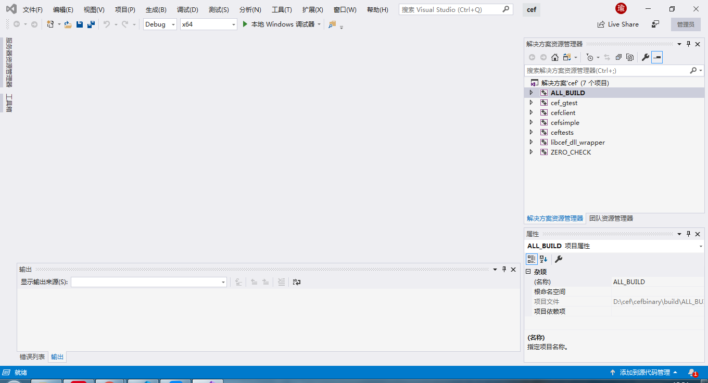
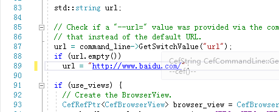

原文连接:https://www.cnblogs.com/lyj00912/p/11385654.html
CEF即Chromium Embedded Framework，Chrome浏览器嵌入式框架。我们可以从自制浏览器入手，深入学习它。它提供了接口供程序员们把Chrome放到自己的程序中。许多大型公司，如网易、腾讯都开始使用CEF进行前端开发，小如网易的Minecraft启动器，大如微信电脑版，都可以使用前端技术进行开发。把C++或者其他编程语言于HTML相结合的CEF，能够实现更好的效果。但一旦你决定开始学CEF，就不可避免地会掉到坑里：中文文档参差不齐，官方文档着重于Linux，很多时候甚至不能自己成功编译CEF！经过2-3天的来回查阅，终于成功编译了cefsimple示例。希望这篇文档能帮你躲过一些坑！在文章的最后，你会得到一个属于你自己的浏览器！
1.下载CEF
使用cef有两种办法：自己编译源码，或者使用编译好内核的半成品，除非你是老练的Linux高手，否则还是建议使用后者，直接下载半成品是最快速，简洁的办法了。这个半成品叫做libcef。下载libcef的官方网址是http://cefbuilds.com/，这个网站已经被墙。你也可以尝试在：http://opensource.spotify.com/cefbuilds/index.html这个映像站下载，不过可能要等上1-2天了。建议挂在远程服务器上下载，或者开代理下载。打开网站后，在页面最底部找到Windows 32-bit Build或Windows 64-bit Build，然后下载。
注意：如果你考虑兼容32位计算机，那可以选择Windows 32-bit Build。但Windows 64-bit Build可以提供超过4GB的内存支持，多页面的话能提升性能（毕竟Chrome很吃内存的）。用Visual Studio在64位计算机编译32位程序会出现一些问题，比如CEF会导致编译失败。如果你打算兼容32位，那就需要找一台32位计算机来编译了。这里使用64位版本。
2.Cmake生成解决方案
下载并解压之后，你应该会得到这些文件：

这时你肯定会疑惑：我的sln和vcproj呢？答案是——你需要使用Cmake。Cmake是一款跨平台的编译辅助工具，如果你在Windows，他可以生成sln和vcproj这样兼容Visual Studio的项目，如果你在Linux，那他也可以生成make这样兼容gcc编译器的项目。这样项目管理者可以一劳永逸，不用分别为Windows、Linux、Mac分别编写项目文件。
Cmake官网也被墙了，你可以挂代理或者从下载站下载它。你需要下载最新版本，可以兼容Visual Studio 2019。打开Cmake：
在Where is the source code框中选择下载下来的cef文件夹，接着再在cef文件夹中创建一个文件夹“build”，在Where to build binaries框中选择这个build文件夹，依次点击Configure——Generate生成文件，不出意料，你的程序就——出错了！

这是由于你选错了Visual Studio版本或者系统位数导致的，试着点击File——Delete Chche清除配置，重来一遍。
如果你生成成功，那你会看到这两条日志：
恭喜你，已经完成大半了！
3.使用Visual Studio编译
打开刚才创建的build文件夹，你会找到cef.sln这个solution（解决方案）文件：
打开它，可以看到这个解决方案下有几个项目：

点击“本地Windows调试器”按钮，不出意料，你的程序就——出错了！
什么也没有打开。不知道你留意到ALL_BUILD项目的名字是粗体字了吗？这表示Visual Studio只会编译和执行这一个项目。而我们希望搭建的是cefsimple项目，怎么办呢？右键cefsimple项目，找到“设为启动项目”。之后你会发现cefsimple变成了粗体，这就表明设置成功了。
点击“本地Windows调试器”按钮，不出意料，你的程序就——出错了！
又来？别担心，这应该是最后一次了，但这也是最头疼的一次。程序成功生成并运行了，但却提示“无法定位程序输入点PowerDeterminePlatformRoleEx于POWRPROF.dll上”！这让人十分抓狂。Debug？几十万行的Chrome怎么Debug，更何况还是半成品。作者只好先放在了一边。过了几天，在B站上偶然看到一篇Visual Studio的科普，提到了Debug和Release版本的区别。Debug是调试用版本，没有进行速度优化，而Release速度更快，但没办法使用断点等调试功能。试着把Debug换成Release：
在等待了几分钟后，编译成功了！这次成功生成了一个名为cefsimple的窗口，但却不显示任何内容。我们打开cefsimple->cefsimple->simpleapp.cc，找到第89行，可以看到他默认访问http://www.google.com/，难怪访问不了！
更改成baidu.com，再进行编译：

可以看到他成功访问了baidu.com！现在，我们也是可以开发浏览器的人了！
Enjoy it！
喜欢的话就点个赞吧！